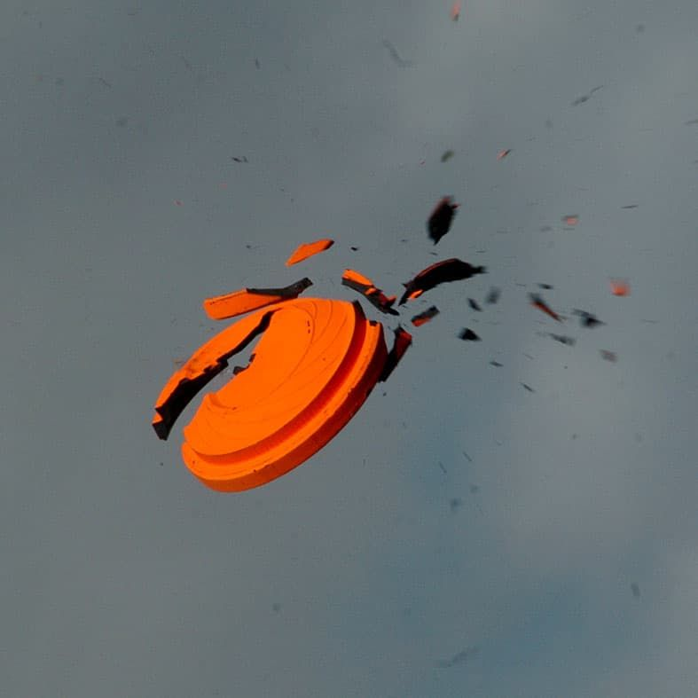

Virtual clay shooting · Soho
Clays, Soho
- Virtual clay shooting from a semi-private peg, with a full bar and a sharing-style food menu.
- £12 to £14 per person for the peg, depending on the day and time.
- £10 arcade format, Soho only, with room for up to five players per station.
- 18+, open Tuesday to Saturday until midnight.

Photo of clay pigeon shooting, not this specific venueWhat is Clays?
Clays is virtual clay pigeon shooting. You stand at a semi-private peg with a motion-tracked, shotgun-style controller and shoot at clays projected onto a screen, with the system tracking your aim to within a fraction of a millimetre and scoring every round automatically. There are six games in total, each with its own scoring, and a live leaderboard runs throughout the session. Most beginners improve within their first few rounds.
Soho is Clays' flagship branch, set inside a 1930s Art Deco building on Brewer Street, with its own private room and a premium hideaway space for larger bookings. Clays also has sites in Canary Wharf, the City and Birmingham.
How does it work?
Soho runs two separate formats.
- The semi-private peg is the main booking, and the one most groups choose. Standard bookings run from 2 to 20 people, with gameplay lasting 40 to 90 minutes depending on numbers, playing across the six main scored games with a shared leaderboard.
- The arcade is a separate, faster-paced space at Soho only, with quicker multiplayer games and room for up to five players per station. It doesn't require a peg booking.
How much does it cost?
| Product | Price | When |
|---|---|---|
| Arcade | £10per person | 75 minutes' play |
| Arcade | £12per person | Saturday, 1pm to 8pm |
| Semi-private peg | £14per person | 90 minutes |
How much is the arcade at Clays, Soho?
The arcade costs £10 per person for 75 minutes' play, rising to £12 per person on Saturday between 1pm and 8pm.
How much is a semi-private peg at Clays, Soho?
A semi-private peg costs £14 per person for a 90-minute session.
What is the food and drink like?
Food comes from Culinary Director Roger Olsson, formerly Executive Chef at the Dorchester and the Ritz London, with a sharing-style menu of bar snacks, sliders, salads and pizzette designed to eat one-handed between rounds. Vegetarian, vegan and gluten-free options run throughout.
Clays' signature drinks are its clarified cocktails, made using a clarification technique that leaves the liquid crystal clear, alongside a wider bar and wine list. The full menu is on Clays' own food and drink page.
How do you get there?
Get directions on Google Maps ↗
Soho. The nearest tube is Piccadilly Circus, about four minutes' walk; Oxford Circus and Leicester Square are also close by. Clays sits inside a 1930s Art Deco building on Brewer Street — the entrance is behind the curtain.
Soho is a multi-floor venue; confirm step-free access and accessible toilets directly with the venue.
How do you book?
You book online, choosing a date, a time, and whether you want a peg or the arcade. Larger groups and events, including Christmas parties, go through Clays' events team rather than the standard booking flow.
Common questions
- How much is Clays Soho?
- £12 or £14 per person for a semi-private peg, depending on the day and time, or £10 for the arcade format.
- Which is cheaper, Soho or the City?
- Soho, on every weeknight. It charges £12 where the City charges £14, Monday to Friday.
- What is the difference between the arcade and the peg?
- The peg is a semi-private shooting bay for your group, playing the six main scored games against your own leaderboard. The arcade is a separate, faster-paced space with quicker multiplayer games and room for up to five players per station, and is only available at Soho.
- Where are the London Clays sites?
- Soho, Canary Wharf and the City, plus a fourth site in Birmingham.
- Is it a real gun?
- No. It's a motion-tracked, shotgun-style controller that shoots at clays projected on a screen, with the system tracking your aim.
- Is there an age limit?
- Yes. Clays is an 18+, licensed bar venue.
You might also like
Similar venues in London
Spotted something wrong on this page — a price, an opening time, a fact that's changed? Tell us and we'll check it.